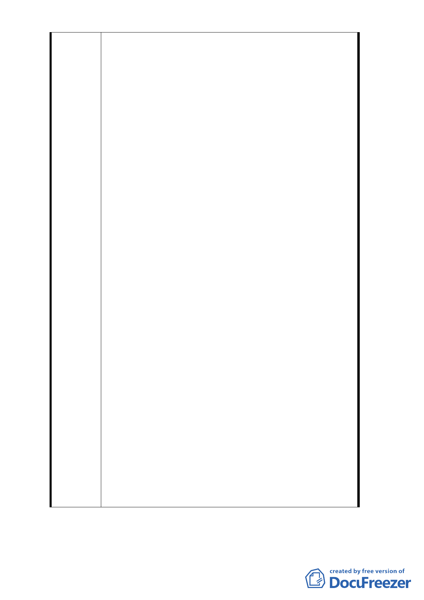

四段、東寧路、縱貫鐵路、八德路四段 106 巷所圍地區
（原唐榮鐵工廠）土地使用計畫案」開發方式細部計畫
案逕行將本公司整體開發之權利予以取消，實已侵害本
公司權益甚明，故本公司反對本案。
2. 又依前述臺北市政府 80 年 2 月 13 日府工二字第
80003366 號函公告土地使用計畫案第 3 頁，本計畫區
係變更為商業區（第三種商業區），及第 4 頁，土地使
用分區管制適用「臺北市土地使用分區管制規則」第三
種商業區有關規定，故本計畫區原計畫應屬『第三種商
業區』。惟前述臺北市政府 102 年 9 月 12 日府都規字第
10235776100 號公告開發方式細部計畫案，第 3 頁計畫
範圍示意圖將本計畫區列為「商三特」，經查本計晝區
非屬市府 84 年 9 月 27 日公告發布實施「修訂台北市主
要計畫商業區（通盤檢討）計畫案」內變更為商業區之
範圍內，且於 80 年公告發布實施後，並未有其他計畫
案將本計畫區變更為「商三特」，80 年 2 月 13 日公告
之土地使用計畫案為法定文書，故其內容跟文字有任何
變更，皆應依法定程序辦理，如未符合程序，恐有重大
爭議，故本次公開展覽計畫書圖之歷史背景及正確性需
再檢討修正。
3. 針對本次都市計畫書內容第 2 頁所提「…有關整體開發
規定，經本市都市計畫委員會第三次專案小組會議結論
（略以）：『本案都市計畫書規定『本案開發計畫應由威
京公司整體開發』，兩造當事人都已無意願，同意依市
府所提辦理修訂細部計畫方式解除整體開發規定』」此
部分威京公司從未同意解除整體開發，並曾以正式行文
反對（詳附件），針對此部份，本公司嚴正抗議。
4. 本案當年在申請過程中，本公司一再遭受到當時臺北市
吳伯雄市長之百般刁難，其中包括捐地等依法無據之要
求，本公司基於地區發展之公益考量，經與市府協議後
，同意捐地 30%，以此為對價關係，取得變更為第三種
商業區及整體開發之權利。如今市政府竟然出爾反爾，
侵害本公司既得之權利，本公司只好尋求各種途徑保護
自身權益。
5. 此外亦有計畫區內之地主，為了整體開發有助於市區之
發展，向本公司表示希望由本公司來進行整體開發，請
惠予審慎考量。
- 11 -